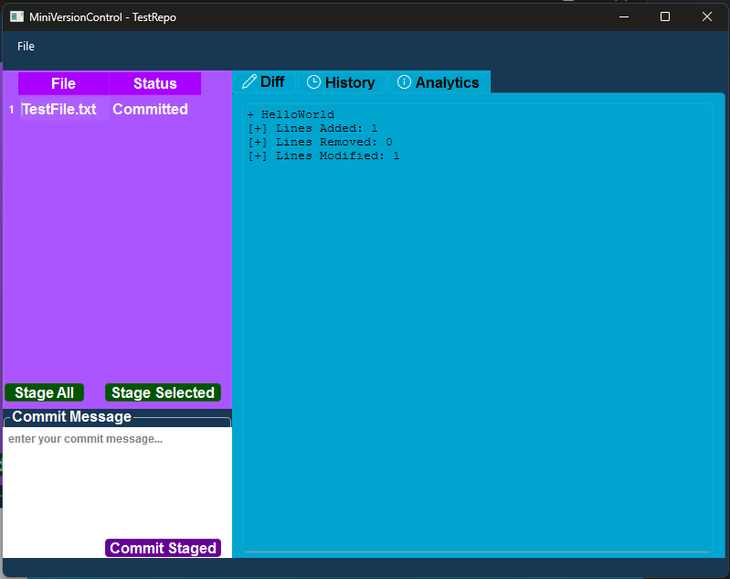
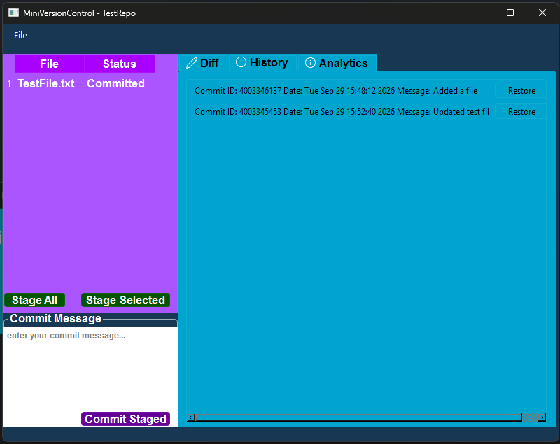
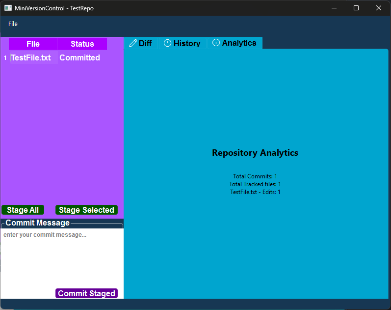
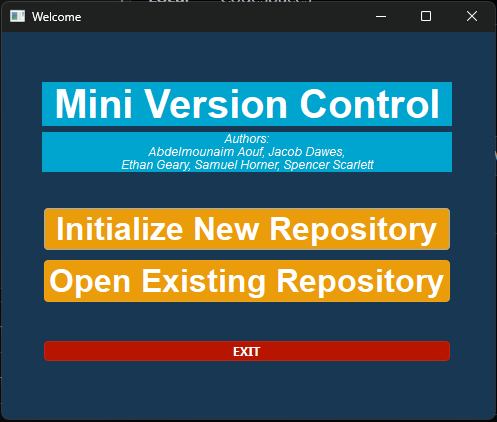
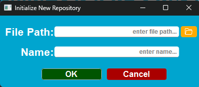
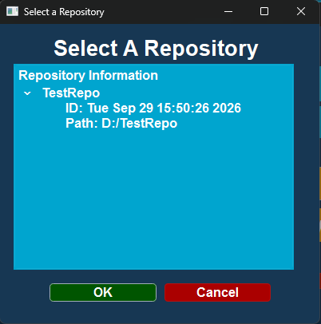

Screenshots













Overview
What happens when you type git commit? We built our own to find out.
This is a lightweight version control system in the style of Git. It tracks changes to files in a local repository and stores snapshots as commits. Users can inspect exactly what changed between revisions.
The engine is written in C++17 and kept separate from the Qt desktop interface. That separation let five people work on the core logic and the GUI at the same time without blocking each other.
Highlights
Repository lifecycle
Initialise a repository and manage its local tracking structures, including the object store, commit log and HEAD state.
Cryptographic hashing
Files are hashed to detect changes and verify integrity. Identical content is recognised without comparing whole files.
Line-by-line diffs
A diff engine compares the working directory against stored snapshots and reports additions and removals line by line.
Commit history
Sequential commits record the author, timestamp and message, and can be browsed as a revision log.
Qt desktop GUI
Repository views, a commit log and a diff inspector, so the whole workflow runs without a terminal.
Architecture
- Repository view
- Commit log
- Diff inspector
- Staging controls
- Repository manager
- Hash engine
- Diff engine
- Object database
- Commit logs
- HEAD state
Three decoupled layers. The GUI only talks to the core engine, and only the engine touches storage, so each layer can be tested and changed on its own.
My contribution
The entire GUI was written by me and designed in the QT editor. Over 100 tests were conducted on my machine to verify the versioning system worked. The file watching system was included and utilized by me to understand when a file had been modified so the repository could be updated.
What I learned
More than anything I learned how to work more effectively in a team setting. I know now that defining the structure of a project beforehand is very important. Defining multiple branches to avoid merge conflicts is very important. I learned how much I enjoy coding in C++. C++ dynamic and static casting are two of the most powerful things I have seen in any language.
Build it
Requires a C++17 compiler (GCC 9+, Clang 10+ or MSVC 2019+), Qt 5.15+ or 6.x, and CMake 3.16+.
git clone https://github.com/Sam-Horner-42/CPPMiniVersionControl.git
cd CPPMiniVersionControl
mkdir build && cd build
cmake .. && cmake --build .